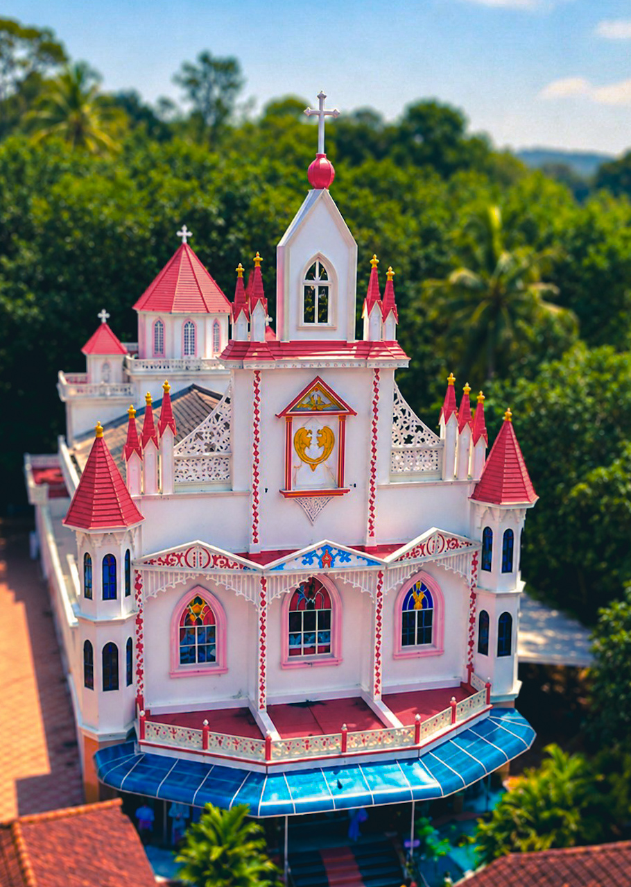

സ്വാഗതം
Welcome
to Mar Aprem Orthodox Church, Parakode
Peace be with you!
We are blessed to have you here. Come and join us in worship, prayer and fellowship.
Know More
Parakode

സ്വാഗതം
to Mar Aprem Orthodox Church, Parakode
Peace be with you!
We are blessed to have you here. Come and join us in worship, prayer and fellowship.
Know More
History of Mar Aprem Orthodox Church, Parakode
Mar Aprem Orthodox Church, situated at Parakode in Pathanamthitta district, Kerala, is a parish of the Malankara Orthodox Syrian Church. Established in 1937, our church has a rich spiritual heritage spanning generations.
The original church was built in 1937, and a new church building was constructed in 2002, marking an important milestone in our parish history. Today, our parish is home to approximately 150 families, united in faith, prayer, worship and fellowship.
Under the spiritual guidance of our Church leadership and the dedicated service of our parish members, we continue to preserve our Orthodox traditions and strengthen our Christian community.
Our Spiritual Leadership
Our Church is guided by His Holiness Moran Mar Baselios Marthoma Mathews III, the Catholicos of the East and Malankara Metropolitan, who serves as the supreme spiritual head of the Malankara Orthodox Syrian Church.
Our parish belongs to the Diocese of Adoor–Kadampanad, under the spiritual leadership of His Grace Dr. Zacharias Mar Aprem Metropolitan.
Our Orthodox Faith and Traditions
The Malankara Orthodox Syrian Church follows the ancient Apostolic faith and traditions rooted in the teachings of Jesus Christ and His Apostles. Our faith is centred on the Holy Trinity — Father, Son and Holy Spirit.
We value the Holy Scriptures, sacred traditions, sacramental life, liturgical worship and the teachings of the Church Fathers. Through prayer, Holy Qurbana, love, forgiveness, compassion and service to others, we seek to grow in faith and live according to the teachings of Christ.
Our mission is to preserve our faith, strengthen our fellowship and pass on our spiritual heritage to future generations.


Join us in worship, prayer and fellowship
Sunday: 8:00 AM
The main service of our church, celebrated every Sunday. Write a few more details here.
Sunday: 7:00 AM
Morning prayer and Sunday worship. Write a few more details here.
Wednesday: 6:30 PM
Weekly prayer meetings for the families of our parish. Write a few more details here.